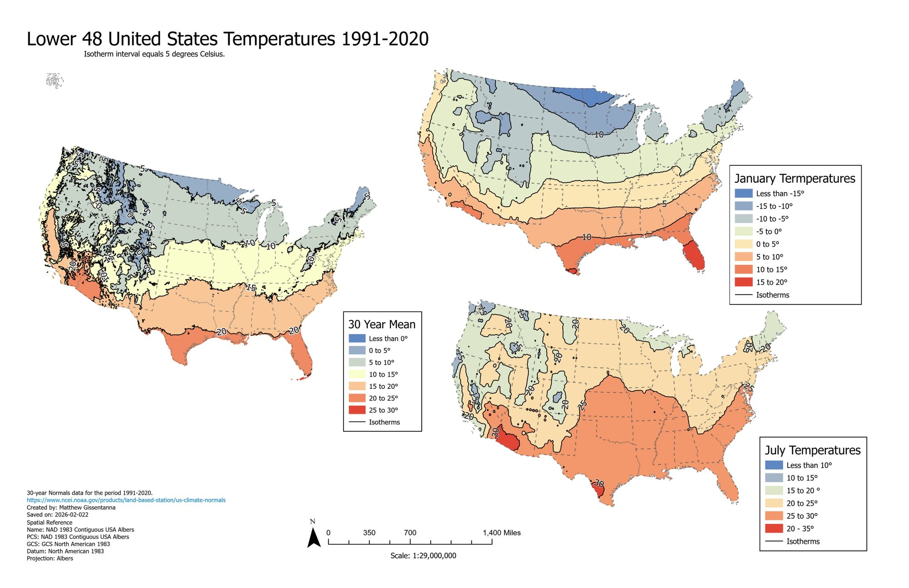

Lower 48 Temperature Isotherms (1991–2020)
USTEMP-2026-02 · Delivered

Overview
An isarithmic mapping exercise interpolating NOAA 1991–2020 climate normals into smooth temperature surfaces for the contiguous United States, presented as three coordinated panels (annual mean, January, July) at a 5°C isotherm interval in NAD 1983 Contiguous USA Albers. A diverging color scheme is keyed to temperature bands.
Processing
SoftwareArcGIS Pro
Coordinate Reference Systems
- Horizontal
- NAD83 Contiguous USA Albers
Methods
- Interpolation of NOAA 1991–2020 station normals to a temperature surface
- Isotherm (isarithmic) contouring at 5°C intervals
- Diverging, banded color scheme keyed to temperature
- Three-panel coordinated layout (mean / January / July)
Deliverables
- Three-panel isotherm map (PDF)
Key Technical Challenge
Producing clean, continuous isotherms from station-based normals while keeping the three panels visually consistent.